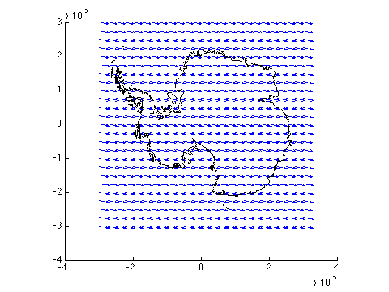
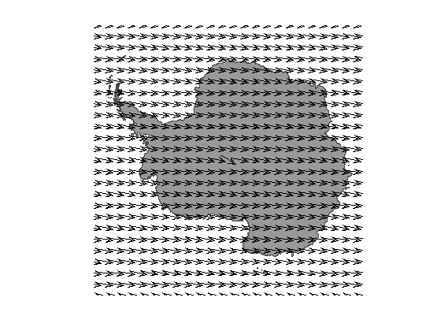
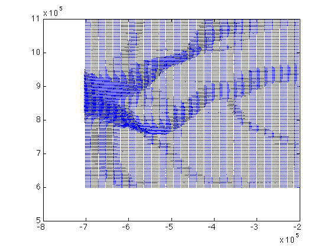
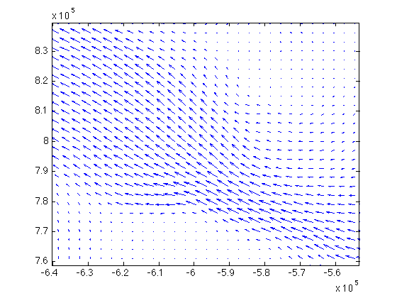
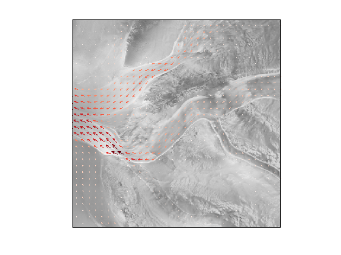

vxvy2uv documentation
vxvy2uv is part of Antarctic Mapping Tools for Matlab (Greene et al., 2017). Click here for a complete list of functions in AMT.
This function transforms polar stereographic vector components to georeferenced (zonal and meridional) vector components.
Contents
Syntax
[U,V] = vxvy2uv(lat,lon,vx,vy) [U,V] = vxvy2uv(x,y,vx,vy)
Description
[U,V] = vxvy2uv(lat,lon,vx,vy) transforms polar stereographic vector components vx, vy referenced to the geographic locations in lat and lon to geographic zonal and meridional components.
[U,V] = vxvy2uv(x,y,vx,vy) transforms polar stereographic vector components vx, vy referenced to the polar stereographic locations in x and y to geographic zonal and meridional components. Polar stereographic coordinates are automatically determined if any value in the first two inputs of vxvy2uv exceed normal geographic coordinate values.
Example 1: Continental scale motion
Consider a vector field depicting motion from left to right on a standard polar stereographic map projection. Make its x component 1.5 magnitude everywhere, and we'll add a slight downward-dipping y component too, just to make things interesting. To set up the grid, us psgrid to create a 6000 km wide grid at 250 km resolution, centered on the South Pole:
[x,y] = psgrid('south pole',6000,250,'xy'); vx = 1.5*ones(size(x)); vy = -0.3*ones(size(x));
In cartesian coordinates this is what the vector field looks like. We'll overlay a Bedmap2 grounding line for context:
quiver(x,y,vx,vy) hold on bedmap2('gl','xy')
close
We can convert this vector field to zonal and meridional components like this:
[u,v] = vxvy2uv(x,y,vx,vy);
Let's show the zonal and meridional components on a map. We'll have to use ps2ll to get the georeferenced coordinates of our xy grid first. Initialize a map with antmap, plot a filled coast line as a patch object for context, and plot the vector field with the AMT function quivermc:
[lat,lon] = ps2ll(x,y);
antmap
bedmap2 'patchcoast'
quivermc(lat,lon,u,v)
 That looks about right. There's one funny vector close to the South Pole because that's where small errors in angles go haywire.
close
Example 2: Glacier motion
Let's use the MEaSUREs toolbox to look at ice motion around Recovery Glacier. Start by defining a 500 km wide grid centered on Recovery Glacier. Make the grid 3 km resolution.
[lat,lon] = psgrid('recovery glacier',500,3);
The measures_interp function can return ice velocity components for at each of our lat,lon grid points:
vx = measures_interp('vx',lat,lon); vy = measures_interp('vy',lat,lon);
In cartesian coordinates, the vector field looks like this:
[x,y] = ll2ps(lat,lon); quiver(x,y,vx,vy)
That's a bit hard to parse using Matlab's quiver function, but if you zoom in the arrows are there. For example,
axis([-640322 -553225 758771 839473])
close
You might want zonal and meridional components of ice motion. Let's do that and show vectors atop a ramp image. When calling quivermc below I'm color-scaling the arrows using one of my favorite colormap generators, brewermap, and I don't want to show too many little arrows, so I'll downsample the field to 20% with the 'density',20 option:
[u,v] = vxvy2uv(lat,lon,vx,vy); mapzoom('recovery glacier') ramp quivermc(lat,lon,u,v,'colormap',brewermap(256,'reds'),'density',20)
Citing AMT
If this function or any other part of Antarctic Mapping Tools is useful for you, please cite the paper that describes AMT.
Greene, C. A., Gwyther, D. E., & Blankenship, D. D. Antarctic Mapping Tools for Matlab. Computers & Geosciences. 104 (2017) pp.151-157. doi:10.1016/j.cageo.2016.08.003.
Author Info
The vxvy2uv function and supporting documentation were written by Chad A. Greene of the University of Texas at Austin's Institute for Geophysics (UTIG), September 2015.